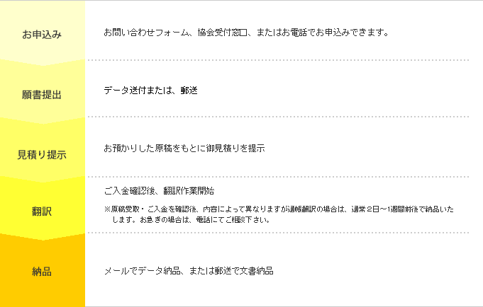
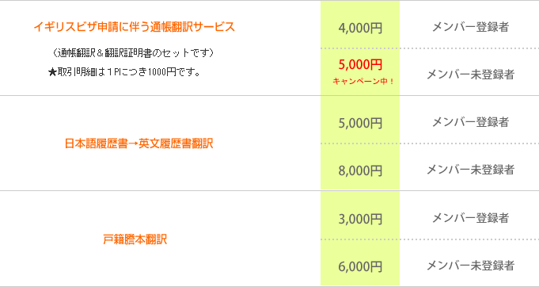

<?php
require_once 'include/header.php';

$header_obj = new Header();

$header_obj->fncFacebookMeta_function=true;

$header_obj->title_page='翻訳サービス';
$header_obj->description_page='ワーキングホリデー（ワーホリ）協定国の最新のビザ取得方法や渡航情報などを発信しています。また、ワーキングホリデー（ワーホリ）をされる方向けの各種無料セミナーを開催しています。オーストラリア、ニュージーランド、カナダ、韓国、フランス、ドイツ、イギリス、アイルランド、デンマーク、台湾、香港でワーキングホリデー（ワーホリ）ビザの取得が可能です。ワーキングホリデー（ワーホリ）ビザ以外に学生ビザでの留学などもお手伝い可能です。';

$header_obj->fncMenuHead_imghtml = '';
$header_obj->fncMenuHead_h1text = '翻訳サービス';

$header_obj->display_header();

?>
	<div id="maincontent">
	  <?php echo $header_obj->breadcrumbs(); ?>

	<div style="margin:50px 0 20px 0; padding: 10px 30px 10px 30px; border: 2px dotted navy;">

		<span style="font-size:18pt; font-weight:bold; color:red;">【ご注意】翻訳サービスのご利用を検討されている方へ</span>
		<p>
		<span style="font-size:16pt; font-weight:bold; color:black;">
			現在、当協会の「翻訳サービス」は、<br/>新規のお申込みを一時中止しております。<br/>
			皆様には大変ご不便をおかけします事をお詫び申し上げます。<br/>
		</span>

	</div>

	  <h2 class="sec-title">（社）日本ワーキング・ホリデー協会の翻訳サービス</h2>
	  <p class="text01">当協会ではイギリスのビザ（ユースモビリティースキーム、その他のビザ）申請に必要な通帳翻訳、日本語の履歴書から英文履歴書への翻訳をはじめとした英語・日本語の翻訳サービスを行っております。</p>
	  <p class="text01">ご利用しやすい安心価格、丁寧な作業で大変好評を頂いております。対応言語は英語・日本語翻訳のみです。翻訳作業は当協会の翻訳専門スタッフが行っておりますので迅速な対応が可能です。是非ご利用ください。</p>
	  <table class="tableofcontents">
	    <tr>
		  <th>目次</th>
		  <td>
		    <ul>
			  <li><a href="#trans-1">サービスの流れ</a></li>
			  <li><a href="#trans-2">料金＆納期</a></li>
			  <li><a href="#trans-3">翻訳依頼＆お問合せ</a></li>
			</ul>
		  </td>
		</tr>
	  </table>
	  <h2 id="trans-1" class="sec-title">サービスの流れ</h2>
	  
	  <p class="text10p">※ご入金確認後直ちに翻訳作業に入りますので、ご返金は致しかねますので、ご注意下さい。<br />
※納品後の翻訳部分の差し替え等は、別料金になります。</p>
      <h2 id="trans-2" class="sec-title">料金＆納期</h2>
	  <p class="text01">FAXまたはデータでお預かりした原稿をもとに見積りを致します。<br />
      料金、納期は原稿内容、ボリュームによって異なります。</p>
	  <p class="text10p">※FAXの場合は、文字の判読が困難なことがあるため、PDFにてメール送付していただくことをお勧めしております。</p>
	  
	  <p class="text10p">※料金は予告なく変更することがありますのでご了承ください。<br />
	    ※インターネットバンキングなどをご使用の方の取引明細書、バンクステートメント等、通帳以外の翻訳に関しては、別途見積りが必要です。<br />
	    ※速達での郵送受取を希望される場合、別途２７０円頂きます。<br />
      ※イギリスYMSの申請が定員に達し、受付不可の場合でも翻訳料金は返金いたしませんのでご注意下さい。</p>
	  <h2 id="trans-3" class="sec-title">翻訳依頼＆お問合せ</h2>
	  <p class="text01">一般社団法人 日本ワーキング・ホリデー協会<br />
〒160-0023<br />
東京都新宿区西新宿1-3-3<br />
品川ステーションビル新宿5階　507<br />
TEL: 03-6304-5858 FAX: 03-6745-1562<br />
E-mail:info@jawhm.or.jp</p>
	</div>
  </div>
  </div>

<?php fncMenuFooter($header_obj->footer_type); ?>

</body>
</html>